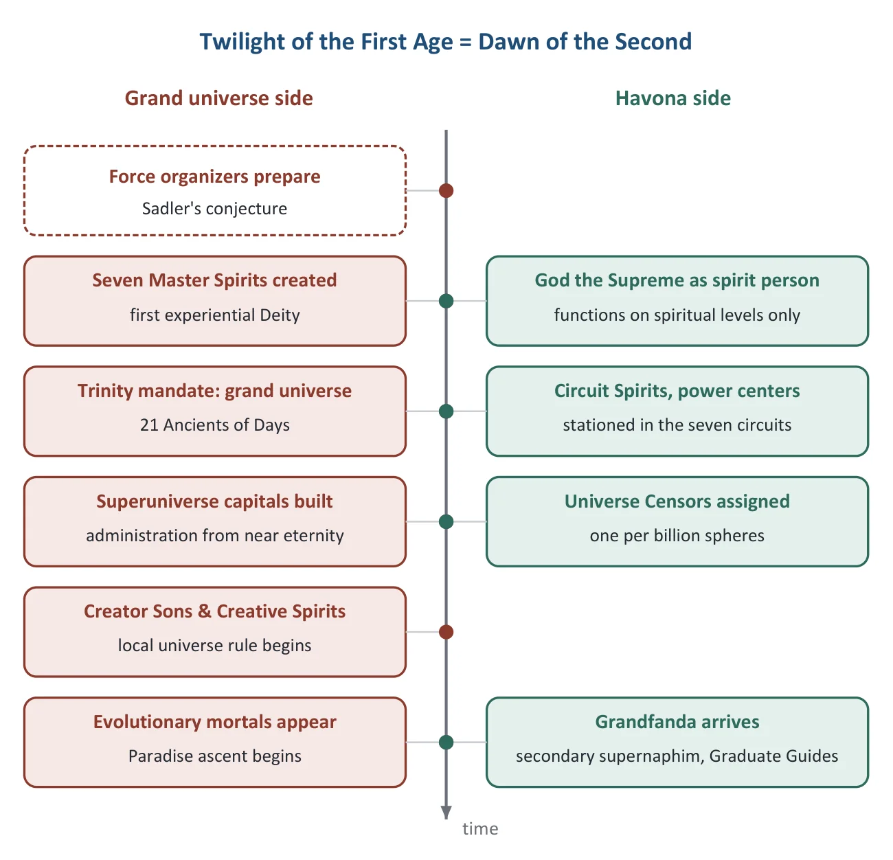

La perfection comme thèse créative
Original : L’Histoire finie, chapitre I, La thèse créative de la perfection (pp. 31–37)
DANS CE CHAPITRE
Le deuxième âge de l’univers, que Sadler appelle « l’Histoire finie », s’ouvre avec la création des Sept Maitres Esprits et des Anciens des Jours et se clôt lorsque l’évolution de l’Être Suprême est achevée. Il n’a pas commencé brusquement. Le crépuscule du premier âge s’est fondu lentement dans l’aube du second. Pendant cette période, la Déité commence à agir sur le « niveau créatif » et, par l’association appelée Dieu le Septuple, s’étend dans le temps et l’espace. Havona l’éternel devient, pendant ce temps, la « thèse de perfection » placée devant les univers imparfaits qui l’entourent.
1. L’entrée dans l’Histoire finie (orig., pp. 31–32)
Après avoir traité dans son prologue d’une éternité sans commencement ni fin, Sadler change maintenant de décor. La deuxième grande division de son livre, « l’Histoire finie », se compose de trois chapitres : la thèse créative de la perfection, l’antithèse évolutionnaire et la première synthèse, Dieu le Suprême.
La plus grande partie du Livre d’Urantia est en fait l’histoire des sept superunivers évoluants, l’histoire de ce qui se passe ici et maintenant. La création et l’évolution dans le temps et l’espace trouvent finalement leur destinée dans des superunivers parachevés sous la souveraineté de l’Être Suprême ; telle est, en bref, l’intrigue du deuxième âge de l’univers.
Sadler souligne que, contrairement à l’éternité qui le précède, c’est un âge que nous pouvons « comprendre ». Le deuxième âge a un commencement et une fin dans le temps. Pour un lecteur qui a cheminé à tâtons à travers l’éternité passée, cela apporte le soulagement d’un sol ferme sous les pieds. Sadler suggère même que la véritable étude du maitre univers commence à ce point.
Le cadre de la thèse, de l’antithèse et de la synthèse
Sadler lit l’histoire du maitre univers comme un schéma répété de thèse, d’antithèse et de synthèse. Quelque chose de parfait est donné d’abord (thèse) ; quelque chose d’imparfait apparait en face de lui (antithèse) ; et, à mesure que l’imparfait croît vers la perfection, les deux sont liés en un seul (synthèse). Ce cadre n’est pas le langage propre du Livre d’Urantia ; c’est un outil d’interprétation que Sadler a emprunté. Pourtant, comme le texte traite la perfection de Havona et l’imperfection des univers évoluants comme des partenaires complémentaires, et présente l’Être Suprême comme leur synthèse, le schéma s’accorde bien avec le mouvement de la révélation.
2. L’aube du temps : l’ouverture du deuxième âge (orig., pp. 32–33)
Crépuscule et aube
Qu’est-ce qui a mis fin à l’âge de Havona et ouvert l’âge des superunivers ? Sadler répond qu’aucun moment unique ne l’a fait. De même que le ciel s’éclaire peu à peu avant le lever du soleil, le crépuscule du premier âge est passé graduellement à l’aube du second. Les évènements décrits ci-dessous sont ceux qui se sont produits, l’un après l’autre, au cours de cette transition.
Sadler place d’abord une conjecture entre parenthèses. Bien avant que le deuxième âge ne commence formellement, suppose-t-il, les Architectes du Maitre Univers ont peut-être envoyé des organisateurs de force dans le niveau spatial des superunivers pour rassembler des énergies et organiser des nébuleuses. Le texte ne donne aucune chronologie de ce genre ; c’est une inférence de Sadler.
Les Sept Maitres Esprits : la première Déité expérientielle
Sadler considère que le premier évènement après l’éternité, c’est-à-dire après Havona, est l’apparition des Sept Maitres Esprits. Bien que ces esprits élevés ne soient pas des êtres absolus, ils représentent la Déité du Paradis sur tous les niveaux inférieurs à l’absolu. Dans les termes de Sadler, ce sont les niveaux fini, subabsolu et fini-subabsolu ; en termes plus familiers, le suprême, l’ultime et le suprême-ultime.
Sadler dégage deux points essentiels au sujet des Maitres Esprits. Premièrement, ce sont des êtres expérientiels plutôt qu’existentiels, la première expression de la Déité expérientielle. Deuxièmement, chacun d’eux incarne personnellement l’une des sept manières dont les trois personnes de la Déité peuvent être combinées : le Père, le Fils et l’Esprit pris isolément ; les paires Père-Fils, Père-Esprit et Fils-Esprit ; et la triade Père-Fils-Esprit.
en tant qu’expressions primaires des sept associations possibles de la Déité trine, ils sont essentiellement différents en nature, et cette diversité de nature détermine le différentiel de leur conduite superuniverselle.16:3.1
Sadler établit ici un rapprochement intéressant. Puisqu’il n’existe mathématiquement que sept manières de combiner trois personnes, il y a sept Maitres Esprits, et c’est précisément pour cette raison que le niveau spatial des superunivers en est venu à être divisé en sept segments. Le Livre d’Urantia associe clairement les sept superunivers aux Sept Maitres Esprits, mais l’affirmation causale selon laquelle le nombre de segments « dérive » du nombre de combinaisons est une interprétation de Sadler.
Dieu le Suprême apparait dans Havona
À un moment de ce crépuscule eut lieu un autre évènement : Dieu le Suprême fit son apparition dans Havona. Sa présence avait sa source dans la Trinité du Paradis, et il existait comme personne spirituelle. Il était présent dans l’univers central avant même que les superunivers ne soient formellement organisés. Pourtant, alors comme maintenant, les créatures ne pouvaient ni s’approcher de lui ni entrer directement en contact avec lui.
En tant que personne, Dieu le Suprême existait dans Havona avant la création des sept superunivers, mais il n’y opérait que sur des niveaux spirituels.56:6.2
Dieu le Suprême a commencé comme une personne spirituelle dépourvue de pouvoir. La manière dont le pouvoir vient s’ajouter à cette personne spirituelle est le fil conducteur des chapitres 6 et 7.
Le mandat de la Trinité et les Anciens des Jours
Ensuite, sous le mandat de la Trinité du Paradis, le grand univers est organisé : Havona est placé au centre, et les sept superunivers sont disposés autour de lui. Sadler pense que c’est vers cette époque que la Trinité a créé les vingt-et-un Anciens des Jours qui allaient gouverner les sept superunivers par groupes de trois. Peu après furent construites les sept capitales des superunivers, et les Anciens des Jours auraient alors quitté le Paradis pour prendre résidence sur leurs sphères-capitales.
Le présent plan d’administration existe presque depuis l’éternité, et c’est à juste titre que les chefs de ces sept superunivers sont appelés les Anciens des Jours.15:0.2
Fils Créateurs, Esprits Créatifs et mortels
Un peu plus tard, le Père et le Fils commencent à créer les Fils Créateurs, et l’Esprit Infini répond en produisant les Esprits Créatifs comme leurs compléments. En temps voulu, ces Fils d’Univers et ces Esprits d’Univers reçoivent mission de gouverner des univers locaux, et le deuxième âge parvient à sa pleine floraison. Bientôt des mortels évolutionnaires apparaissent sur les mondes de l’espace, et les pèlerins du temps entreprennent la longue ascension vers le Paradis à la recherche du Père Universel.

Tous sont des êtres expérientiels
Sadler s’attarde sur cette transition afin de montrer ce que les êtres nouvellement apparus ont en commun. De l’homme mortel jusqu’aux Maitres Esprits et à Dieu le Suprême, les nouveaux êtres du deuxième âge sont tous expérientiels. Ils ne savent pas tout avant d’en avoir fait l’expérience ; ils croissent en apprenant et en vivant.
Les créateurs ne font pas exception. Les Fils Créateurs et les Esprits Créatifs changent de statut à mesure qu’ils traversent l’expérience d’organiser et de parachever leurs univers locaux. Si la Déité existentielle est Celui qui « est déjà tout », les êtres expérientiels sont des êtres qui sont « en devenir ». Le deuxième âge est l’âge du devenir.
3. Dieu le Septuple : la Déité créative (orig., pp. 33–36)
Une échelle vivante entre Dieu et l’homme
Avec l’organisation des sept superunivers, l’association créative connue sous le nom de Dieu le Septuple a commencé à fonctionner. Sadler présente Dieu le Septuple comme l’extension créative et associative des Déités du Paradis vers l’extérieur, dans le temps et l’espace. C’est ainsi que la Déité entre en contact avec chaque créature des superunivers et des univers locaux. En image, c’est une échelle vivante faite de personnalités divines, qui franchit l’abime séparant un être humain du Père du Paradis.
Pour compenser le caractère fini du statut des créatures et pour pallier leurs limitations de concept, le Père Universel a établi pour les créatures évolutionnaires une septuple approche de la Déité :0:8.1
Cette association fonctionne sur sept niveaux, et ses membres se répartissent en trois grands groupes. En haut se trouvent les Déités du Paradis familières : le Père Universel, le Fils Éternel et l’Esprit Infini. Au milieu se trouve la Déité expérientielle, l’Être Suprême. En bas se trouvent les Créateurs Suprêmes, composés des Fils Créateurs, des Anciens des Jours et des Sept Maitres Esprits.

Ce qui est nouveau, c’est le corps des Créateurs Suprêmes, les « créateurs postérieurs à Havona ». Ils organisent et parachèvent les sept superunivers et les sept-cent-mille univers locaux encore à venir. Chaque Maitre Esprit pénètre un superunivers et en détermine le caractère individuel ; les Anciens des Jours gouvernent chaque superunivers en triade ; et chaque Fils Créateur, conjointement avec un Esprit Créatif, crée ou fait évoluer un univers local et sa vie native.
Dans quel sens compter les sept niveaux
L’Introduction du Livre d’Urantia compte les niveaux de Dieu le Septuple de bas en haut : le numéro 1 est celui des Fils Créateurs du Paradis et le numéro 7 celui de Dieu le Père [0:8.2–8]. Cela suit l’ordre dans lequel un mortel ascendant les rencontre effectivement. Dans ce chapitre, Sadler compte dans l’autre sens, en plaçant le Père en premier, mais dans le tableau récapitulatif du chapitre suivant il place de nouveau le Fils Créateur en premier. Quelle que soit l’extrémité par laquelle nous commençons, le contenu est le même. Comptée à partir du haut, l’échelle montre le chemin par lequel la Déité descend ; comptée à partir du bas, elle montre le chemin par lequel une personne s’élève.
L’Être Suprême occupe une place unique dans cette association. Sadler l’appelle la Déité expérientielle évoluante et explique que son émergence graduelle repose sur trois choses : ce que les Créateurs Suprêmes accomplissent dans les royaumes du temps et de l’espace, le fruit de leur coopération réussie avec les Déités du Paradis, et l’effort propre de l’Être Suprême pour croitre.
La Déité entre dans le niveau créatif
Sadler s’arrête ici pour observer que la Déité est entrée dans un nouveau niveau d’activité. L’Introduction nous dit que la Déité totale fonctionne sur sept niveaux [0:1.3]. Dans son prologue, Sadler a considéré que la Déité avait commencé sur le niveau statique, était passée par le niveau potentiel et, à l’aube du premier âge, agissait sur le niveau associatif. Une différence fondamentale entre le premier et le deuxième âge apparait maintenant : la Déité est entrée dans le quatrième niveau d’activité, le niveau créatif.
4. Créatif — Déité distributive d’elle-même et divinement révélée.0:1.7
Qu’est-ce que cela signifie ? Selon l’explication de Sadler, la Déité a maintenant commencé à puiser dans le vaste réservoir de la réalité potentielle, les potentiels des trois Absolus. Des potentiels fondamentaux qui sont préspirituels, prémentaux et prématériels sont transmués et commencent à émerger dans les nouveaux univers sous forme d’esprit nouveau, de mental nouveau et de matière nouvelle.
Le processus de création est, en fait, un processus de transmutation. Qu’il s’agisse d’une nouvelle personnalité spirituelle, d’un nouveau niveau fonctionnel du mental ou d’une nouvelle nébuleuse qui deviendra un jour la matière d’un univers local, ces « nouvelles réalités », explique Sadler, proviennent en dernier ressort des trois Absolus de potentialité. Pour prolonger l’image du réservoir : jusqu’au premier âge, il n’avait fait que se remplir, et au deuxième âge les vannes se sont ouvertes pour la première fois, laissant l’eau se répandre à travers les champs.
4. Havona au deuxième âge : la thèse de perfection (orig., pp. 36–37)
Un univers antérieur à la création et un univers modèle
Dans le prologue, Sadler a traité Havona au premier âge comme antérieur à la création, comme quelque chose qui en fait n’a jamais eu de commencement. À strictement parler, c’est probablement la bonne manière de classer l’univers central. Pourtant, en pratique, par rapport aux superunivers, Havona est une création, l’univers modèle de la perfection divine.
Au deuxième âge, Havona devient la thèse divine de perfection, un défi de Dieu placé devant les univers évoluants imparfaits qui l’entourent. À chaque créature, Dieu adresse cette invitation :
Du Père Universel qui habite l’éternité est issu le commandement suprême : « Soyez parfaits comme moi-même je suis parfait. »1:0.3
Sadler estime que ce commandement s’adresse non seulement aux créatures individuelles, mais aussi à chaque Fils Créateur et à chaque Esprit Créatif. Peuvent-ils, par la création et l’évolution expérientielles, reproduire dans leurs propres domaines la perfection éternelle de l’univers existentiel qui se trouve au cœur de toutes choses ? Havona est le modèle ; les univers évoluants sont l’atelier où ce modèle doit être étudié et le même ouvrage façonné à nouveau.
Le défi atteint aussi Havona
Sadler ne voit pas cette relation comme allant dans un seul sens. Si Havona lance un défi aux superunivers imparfaits, ces superunivers dans le besoin lancent à leur tour un défi à Havona. La création centrale répond bien avant que le premier ascendeur mortel n’atteigne ses royaumes établis. Les évènements à venir projettent leur ombre devant eux.
Lorsque le premier âge entre dans son « crépuscule », le défi pénètre pour la première fois dans l’immuable Havona. De nouveaux êtres apparaissent. Les sept circuits de Havona ont toujours existé, et pourtant on trouve maintenant des Esprits des Circuits à l’œuvre dans chacun d’eux. Des centres de pouvoir prennent des postes permanents dans les sept circuits. Chacune du milliard de sphères reçoit ses Censeurs Universels. Ainsi la création centrale se prépare aux évènements à venir.
L’arrivée de Grandfanda
Quand Grandfanda, le premier pèlerin mortel, atteint Havona, une foule de nouveaux développements s’ensuivent. Un nouvel ordre d’esprits tutélaires, les supernaphins secondaires, apparait. Des citoyens du Paradis entreprennent un pèlerinage vers l’extérieur à travers Havona. Le premier Guide de Diplômés accueille Grandfanda.
Dans aucun des royaumes de l’univers central il n’est fait mention d’un Guide de Diplômés avant l’époque très lointaine où le premier pèlerin mortel de tous les temps atteignit la ceinture extérieure de la création centrale.24:6.4
Les ascendeurs venant des superunivers apportent dans la création centrale les semences de la croissance évolutionnaire. Ainsi le Havona du deuxième âge demeure un univers éternel et antérieur à la création, tout en devenant un univers créatif et changeant, voire évoluant. Quand des hôtes sont entrés dans la maison parfaite, la maison elle-même a commencé à changer pour les recevoir.
Points clés
- Le deuxième âge de l’univers, « l’Histoire finie », commence avec la création des Sept Maitres Esprits et des Anciens des Jours et se termine lorsque l’évolution de l’Être Suprême est achevée. C’est un âge que nous pouvons comprendre, avec un commencement et une fin.
- Le passage du premier au deuxième âge n’a pas été un évènement soudain, mais un processus graduel, comme le crépuscule qui se change en aube.
- Les Sept Maitres Esprits sont la première Déité expérientielle et expriment les sept combinaisons possibles entre les trois personnes de la Déité. Sadler trouve dans ce nombre la raison pour laquelle il y a sept superunivers.
- Avant que les superunivers ne soient organisés, Dieu le Suprême était présent dans Havona comme personne spirituelle, mais n’opérait que sur des niveaux spirituels.
- Dieu le Septuple est une échelle composée de trois groupes, les Déités du Paradis, l’Être Suprême et les Créateurs Suprêmes, et il montre que la Déité est entrée dans le niveau créatif.
- Les nouveaux êtres du deuxième âge, créateurs compris, sont tous expérientiels ; ils apprennent et croissent.
- Au deuxième âge, Havona devient la « thèse de perfection » et en même temps, mis au défi par les superunivers, un univers changeant qui accueille de nouveaux êtres tels que les Esprits des Circuits et les Guides de Diplômés.